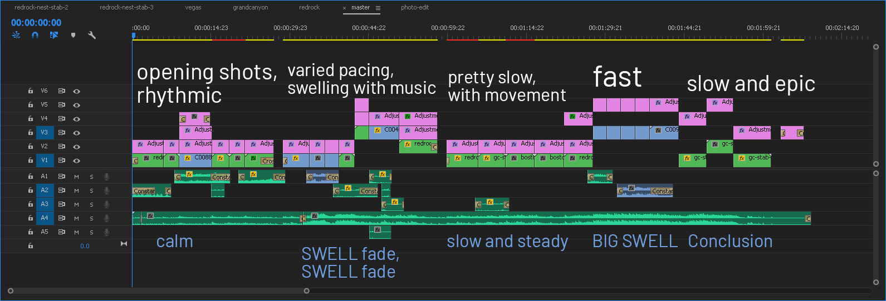

In August 2017, I flew with my family from NYC’s JFK into Las Vegas’ LAS. We walked around the Vegas strip, visited Red Rock Canyon, hiked five miles into the Grand Canyon, and did some other fun stuff. Throughout the trip, I had a camera around my neck (see Tools for discussion about that) and really without trying to make anything out of it took a bunch of video.
At the end of it all, I just had a haphazard mess of footage — most of it pretty mediocre, but a lot of it pretty gorgeous and packed with potential. However, it wasn’t nearly enough for a vlog or to make anything narrative-y out of it. Six months of stumbling on the footage time and time again as I worked on other projects later, I finally found the spark to do something with it.
The idea was to make a highlight-reel-y type video, no doubt influenced by Kraig Adams*’ 38-minute Tokyo Super Vlog and following 2-minute Travel Film. In a week’s worth of lunch breaks, nights procrastinating homework or staying up too late, and a few hours over the weekend, my little edit was done.
The first (zeroth) step was just organizing all my footage and picking out the best shots. When I found shots I liked, I tossed them into test comps, testing out color grades, warp stabs, and black bars to see what I was working with and what potential it had. After a few runs of this, I had something of a mental map of what kinds of shots I wanted in terms of movement, color, composition, etc.
Next, I picked out a music backing track to assemble my edit around. I knew I wanted something instrumental and very relaxed and chilled. I had just discovered Ben Thornewill’s First Improvisations, an album of, as the title suggests, piano improvisations. The tenth track, “Almost”, was a perfect fit for what I wanted. I did a little stitching to reduce the track from three and a half minutes to just over two by cutting out the first swelling and connecting two repeated parts.
From here, I started dropping my footage around the music. When populating about the first third of the sequence, I really didn’t have a cohesive idea in mind. I just dropped shots in as felt right and somewhat similar and connected.
As I put together the first cut, I worked out how the music broke up into sections and the pacing and feeling of each, and what kind of shots fit into each one. Parts of the music were slow and relaxed; here I put wide shots and still shots. Other passages were build-ups, where pace increased. Here I put shots with more motion and upped the pacing with more frequent cuts. In climatic moments I put my grandest and most epic shots.
As the music developed, the video also developed with a bit of a narrative. There was the idea of progress and reward. The first section started with relatively close, tame shots. This opened up into a few big shots as the music swelled, then calmed back down. A middle section showed a car driving down a winding road, a hiker going up a trail, sailboats in the Boston harbor, and cars driving across the Hoover dam, reflecting the theme of hiking and moving to somewhere. This movement sped up with the music into a rattling train, an unstabilized shot heading down the road, and a chaotic buggy racing across the desert. All of this opened up into the final reward, the final, biggest shot: a full view of the Canyon from halfway down the trail, thousands of feet above the base yet thousands of feet below the ridge.
You can see this reflected in the timeline. Ignoring all the pink clips (titles, adjustment layers), green clips are stabilized shots, and blue clips unstabilized. The length of clips in each section change, and you can see it reflect the rhythm of the music, or follow the themes as in the final video.
Of course, it wasn’t just toss a bunch of clips in order to make it feel right. I shot Slog2, a profile that made the images very, very flat and desaturated. A lot of this Slog2 was underexposed, either because I didn’t know what I was doing, or I was rushed and didn’t have time to get my exposure right, or because the small sensor and slow aperture just wasn’t enough.
Every single shot in the film was color corrected and graded. I fixed white balance (which tends to go absolutely haywire with underexposed Slog2), upped contrast and saturation, and changed the colors around. Below are some simpler grades, before and after:
In a first for me (I pick up tons of new things with every project!), I also did some masked adjustment layers to selectively grade parts of the image differently. For shots with distinct backgrounds and foregrounds, this let me really dial in the look I wanted. The first example is really dramatic, but the latter two are much more subtle.
Another first: using foley in a bit of an abstract-ish way to deepen the effect of the footage. Foley just means that almost all the audio used wasn’t actually recorded live, but rather recorded after the fact or separately (in this case, sourced from freesound.org).
The first shot of the flag waving is accompanied by sound of a flag flapping in the wind (I believe the actual recording is of bedsheets flapping about a clothesline). Similarly, all the other sound clips are labeled above.
Done at a sufficient level, as demonstrated by Ash Tailor, this foley can be rhythmic and pulsing in its own right. While I don’t think I quite achieved that level, the foley definitely added a level of immersion to the film.
And that’s it, pretty much. That’s the process behind how I put together that two-minute video.
I really like these little edits I put together just for YouTube because they’re so unrestrained. There’s no deadline and no expectations, only what I can scrape together and make out of what I have.
A project like this is always an opportunity to forge ahead and learn and try out new things, and this one was no different. Putting off this footage for six months instead of editing instantly gave me time to take inspiration from Kraig Adams and Ben Thornewill, and the confidence to experiment with foley and color grading with masks on adjustment layers.
I thought that this was also an overall pretty slick and well-paced edit, with some gorgeous shots and color grading, unlike my last attempt at this type of thing with my two China vlogs and barely-started-before-scrapping New Orleans vlog. I’ll definitely be taking a lot of this experience into other projects going forward.